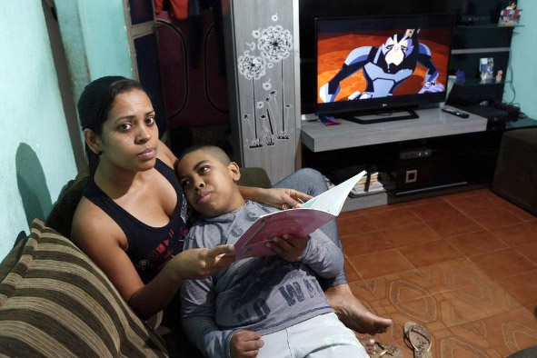

Leitura Orante
Leitura do dia
Sábado da 18a Semana do Tempo Comum
São Domingos, Presbítero e Fundador
(Branco – ofício da memória)
8 de agosto de 2020
Leitura Orante do Evangelho
Ouça o áudio da oração e reflexão do padre Francisco das Chagas


Oração do dia
Ó Deus, que os méritos e ensinamentos de São Domingos venham em socorro da vossa Igreja, para que o grande pregador da vossa verdade seja agora nosso fiel intercessor. Por Nosso Senhor Jesus Cristo, Vosso Filho, na unidade do Espírito Santo.
Leitura: Habacuc 1,12-2,4
12Acaso não existes desde o princípio, Senhor, meu Deus, meu santo, que não haverás de morrer? Senhor, puseste essa gente como instrumento de tua justiça; criaste-a, ó meu rochedo, para exercer punição. 13Teus olhos são puros para não veres o mal; não podes aceitar a visão da iniquidade. Por que, então, olhando para os malvados e vendo-os devorar o justo, ficas calado? 14Tratas os homens como os peixes do mar, como os répteis, que não têm dono. 150 pescador pega tudo com o anzol, puxa os peixes com a rede varredoura e recolhe-os na outra rede; com isso, alegra-se e faz a festa. 16Faz imolação por causa da sua malha, oferece incenso por causa da sua rede, porque com elas cresceu a captura de peixes e sua comida aumentou. 17Será por isso que ele sempre desembainhará a espada, para matar os povos sem dó nem piedade? 2,1Vou ocupar meu posto de guarda e estarei de atalaia, atento ao que me será dito e ao que será respondido à minha denúncia. 2Respondeu-me o Senhor, dizendo: “Escreve esta visão, estende seus dizeres sobre tábuas, para que possa ser lida com facilidade. 3A visão refere-se a um prazo definido, mas tende para um desfecho e não falhará; se demorar, espera, pois ela virá com certeza e não tardará. 4Quem não é correto vai morrer, mas o justo viverá por sua fé”. – Palavra do Senhor.
Salmo Responsorial: 9A (9)
Vós nunca abandonais quem vos procura, ó Senhor.
!
Deus sentou-se para sempre no seu trono, preparou o tribunal do julgamento; julgará o mundo inteiro com justiça, e as nações há de julgar com equidade.
Vós nunca abandonais quem vos procura, ó Senhor. !
O Senhor é o refúgio do oprimido, seu abrigo nos momentos de aflição. Quem conhece o vosso nome em vós espera, porque nunca abandonais quem vos procura.
Vós nunca abandonais quem vos procura, ó Senhor. !
Cantai hinos ao Senhor Deus de Sião, celebrai seus grandes feitos entre os povos! Pois não esquece o clamor dos infelizes, deles se lembra e pede conta do seu sangue.
Vós nunca abandonais quem vos procura, ó Senhor. !Evangelho: Mateus 17,14-20
14Naquele tempo, chegando Jesus e seus discípulos junto da multidão, um homem aproximou-se de Jesus, ajoelhou-se e disse: 15“Senhor, tem piedade do meu filho. Ele é epilético e sofre ataques tão fortes, que muitas vezes cai no fogo ou na água. 16Levei-o aos teus discípulos, mas eles não conseguiram curá-lo!” 17Jesus respondeu: “Ó gente sem fé e perversa! Até quando deverei ficar convosco? Até quando vos suportarei? Trazei aqui o menino”. 18Então Jesus o ameaçou e o demônio saiu dele. Na mesma hora, o menino ficou curado. 19Então, os discípulos aproximaram-se de Jesus e lhe perguntaram em particular: “Por que nós não conseguimos expulsar o demônio?” 20Jesus respondeu: “Porque a vossa fé é demasiado pequena. Em verdade vos digo, se vós tiverdes fé do tamanho de uma semente de mostarda, direis a esta montanha: ‘Vai daqui para lá’, e ela irá. E nada vos será impossível”. – Palavra da salvação.
Leituras do mês
TAGS
missao Amazonia evengel covid-19 indigenas novica papa francisco
Destaques
Província Stella Matutina
Rua São Benedito, 2146 - Santo Amaro - São Paulo - SP |
Tel. (11) 5547-7222


Província Spiritus Divinae Sapientiae
Rua Arnaldo Janssen, 320 - Cara-Cara - Ponta Grossa - PR |
Tel. (42) 3326 4091